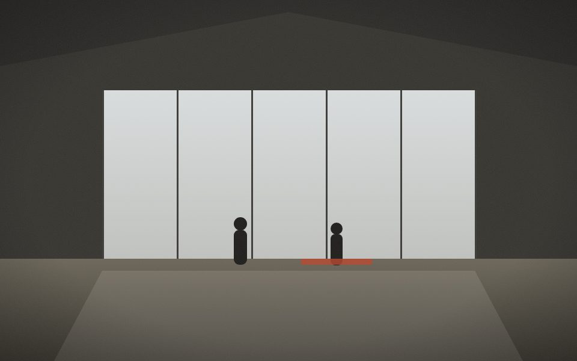

Lily Donzallaz
Next · step 5 of 6
Upload
The film is rendered. Send it, the photos and the originals where you choose. The film's folder gets the link Lily will be emailed.
nothing is sent until you press Upload in the dialog
Lily-Donzallaz_2026-09-28_14-32.mp4 · 812 MB · rendered today 07:58 · noticed by itself
Its edit holds these files: no trim, frame, turn, move or new name until the montage is reset. Previewing and uploading go on.
Videos · 9in its edit
 1:48
1:4814:32
 3:12
3:1214:33
 2:06
2:0614:36
 4:02
4:0214:38
 1:10
1:1014:44
 0:52
0:5214:42
 0:40
0:4014:47
Photos · 5
14:41Proc.
14:41Proc.
14:39Proc.

14:20Proc.
14:48Proc.